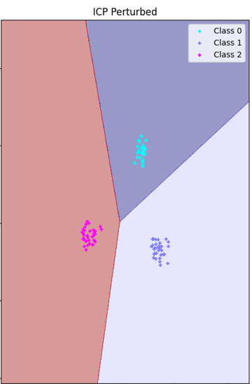

|
Maheak Dave I am an AI enthusiast, passionate about creating meaningful solutions preferably using AI technologies. |
ResearchI have experience in computer vision, deep learning, generative AI, and image processing. I am interested in any domain where I believe, I can meaningfully contribute to humankind. Below are the highlights of my research journey. Shoutout to my peers and my mentors who have helped me in this journey. |
|

|
Self Distillation via Iterative Constructive Perturbations
Maheak Dave, Aniket Singh, Aryan Pareek, Harshita Jha, Debasis Chaudhuri, Manish Pratap Singh Preprint arxiv, 2025 Github / ArXiv Exploit effects of constructive perturbations (gradient descent on input samples) via self distillation to enhance neural network's performance. |
Experience |
|
|
Research Intern
DRDO project executive lab, Techno India University Kolkata, West Bengal Sep, 2024 - Sep, 2025 Internship Report Worked on the XCA (Explaining the Cognitive Algorithms) project as a research intern, which was a CARS project issued by DYSL-CT lab, chennai. Details of my work during my internship can be viewed in the internship report above. |
Undergrad |
|
|
Techno India University
Kolkata, West Bengal 2021 - 2025 CGPA - 8.52 Pursued B.Tech in Computer Science and Engineering with specialization in A.I.
|
|
Template from Jon Barron |